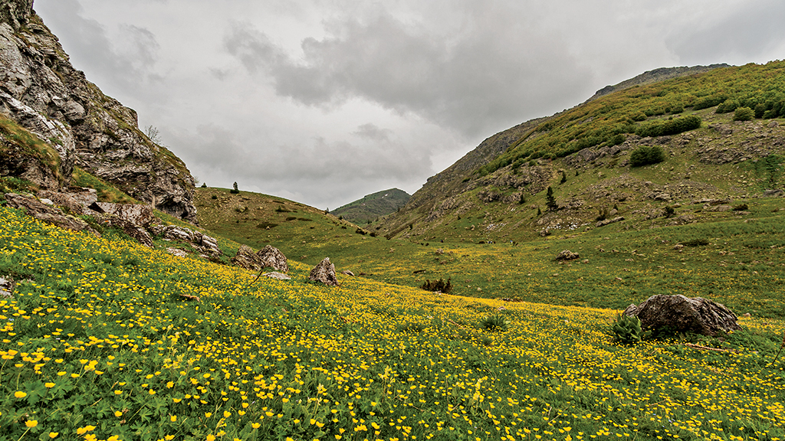
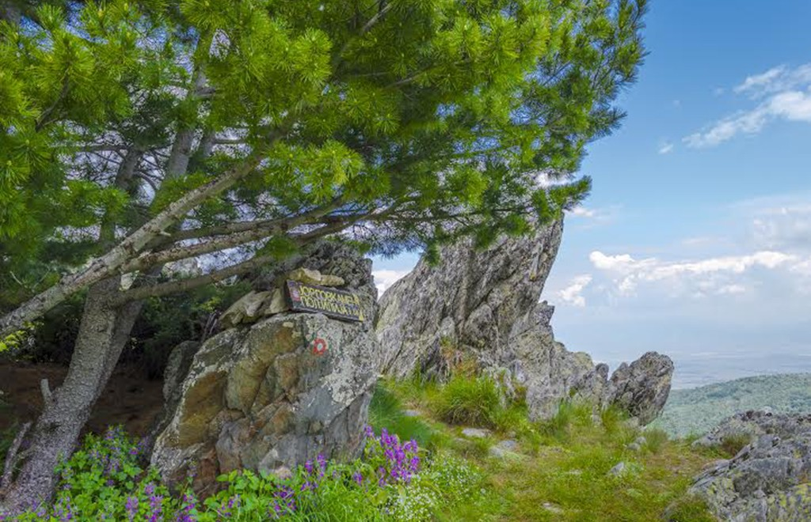
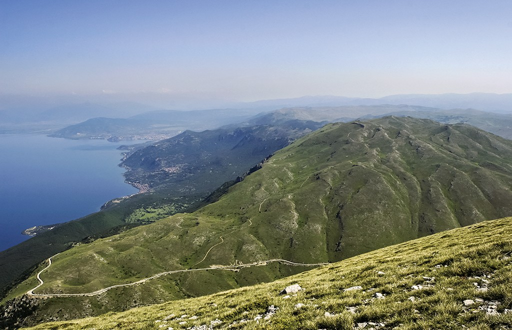

Shar Mountain is situated in the northwestern part of the Republic of
Macedonia. The massif extends from the northeast to the southwest for 80
km with a total surface area of around 1.600 km2, making it one of the
largest massifs in the Balkans. Shar Mountain can be divided into three
segments (though heterogeneous), according to its geological composition
and its common geographical characteristics: Northeastern segment;
Northwestern or central segment; Southern segment. The approximate
height of the mountain range is 2.200 m with Titov Vrv being the highest
peak (2.747 m). It begins with the River Lepenec and with the peak of
Ljuboten, 2.499 m. It ends with Morava summit, 2.147 m, and Lake
Mavrovo. Shara Mountain massif belongs to a group of young mountain
chains and is characterized by a mountainous climate with cold winters
and pleasant summers. At an elevation of 1.300 m the snow averages a
depth of 1m and usually lasts for four months. The Eyes of Shar
Mountain, as its glacial lakes are popularly known, are its special
characteristic. There are 25 lakes that are constant, over 150
occasional lakes and as many smaller ponds. The water potential of this
massif is huge and it has 200 springs of pure water. Among others, the
mineral richness is represented by manganese, iron, chrome, molybdenum,
and copper.
Jablanica Mountain

Macedonia. It is situated between the Ohrid-Struga Valley and the Debar
Valley, to the west of the River Black Drin (Valley and the shore-line
of Lake Ohrid. The eastern side of the mountain belongs to the Republic
of Macedonia, while the western side belongs to the Republic of Albania.
It stretches in a meridian direction with a length of 35 km, and its
greatest width in our country is 7.5 km. The part of the mountain on
Macedonian territory covers an area of 255 km2. Jablanica is a fold
mountain formed by the Oligo-Miocene tectonic movements. Its geological
structure is represented by Paleozoic shale on the mountain slopes,
covered by Triassic limestone. The topography of Jablanica is dominated
by high mountain peaks, wide expanses, deep river gorges, and by karts
and glacial landforms. Its highest peak is Crn Kamen (2.257 m.), and it
has several other peaks higher than 2.000 m, such as: Strizak (2.233 m),
Krstec (2.186 m), and Cumin Vrv (2.125 m). The fossil glacial features
are represented by five cirques that enclose the four glacial lakes:
Vevcani, Podgorje, Upper and Lower Labuniste. The mountain abounds in
water, and the most famous springs are the ones in Vevcani, which are a
tourism attraction in their own right. In terms of mineral resources,
there is a coalmine near the village of Piskupstina.
Baba Mountain

A mountain massif located in the southwest of the Republic of Macedonia,
with Pelister as its highest peak (2.601 m). By virtue of the
multi-staged tectonic activities, the mountain rises in a typical horst
between the Pelagonia Valley to the east and the Prespa Valley to the
west. To the north, via the mountain pass Gjavato (1.167 m) and Capari
field, it is morphologically separated from the Bigla Mountain (1.656
m), while to the south it continues in Greece, all the way up to the
mountain pass Vigla (1.505 m), along the Florina – Kastoria road. It
stretches along the meridian to a total length of 35 km. The border
between Macedonia and Greece passes through its southern parts. Within
the territory of our country it covers an area of 436 km2. The dominant
geomorphologic form of the high mountain area is the main ridge of the
mountain, which also serves as a water divide between the Adriatic and
the Aegean basins. Apart from Pelister, there are several other mountain
peaks rising above 2.000 m from the ridge. Those are the following: Stiv
(2.468 m), Visoka Cuka (2.182 m), Vrteska (2.010 m), Ilinden (2.542 m),
Golemo Stapalo and (2.415 m).
Galichica Mountain

A mountain situated in the outermost southwest part of the Republic of
Macedonia, which, in the form of a typical horst, rises in between the
Ohrid Valley to the west and the Prespa Valley to the east. To the north
it is continued by the mountains of Petrino and Istok, and by the Bukovo
col (1.207 m) it is morphologically separated from the Plaken Mountain.
It stretches 50 km along the meridian, and its smallest width is between
the village of Trpejca and the village of Leskoec (10 km). Only the
southernmost parts of Galichica rise above 2.000 m. Its part south of
Zli Dol is called Old Galichica. It is the highest part of the national
park with the most remarkable relief. Its sides cut steeply toward the
lakes and are furrowed with dry ravines, which give the mountain an
inaccessible look. It lowest points are at the level of Lake Ohrid (695
m.) and the level of Lake Prespa (850 m), with its highest peak being
Magaro (2.255 m), and there is another peak at an altitude of 2.275 m
situated on the very border with Albania.